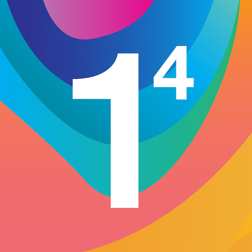

#
VPN
#
VPN Types
#
Premium
Dies ist eine der sichersten Möglichkeiten. Zum Beispiel Mllvad, Surfshark, NordVPN usw. Bevor du ein Abonnement abschließt, prüfe bitte, ob der Inhaver des VPN-Anbieters vertrauenswürdig ist. Lese zum Beispiel diesen Artikel .
#
Freemium
Diese Anbieter bieten eine kostenlose Stufe mit einem Datenlimit und sehr wenigen Servern an. Unter anderem Proton (kein Datenlimit), Windscribe (10GB/Monat), Hide.me (10GB/Monat), etc. diese kostenlosen Server haben aber oft einen sehr hohen Ping, geringe Bandbreite und Geobeschränkung beim Streaming.
Windscribe hat mehr kostenlose Server als ProtonVPN. Das bedeutet weniger Traffic und einen geringeren Ping.
#
Cloudflare WARP
1.1.1.1 ist eine vernünftige Alternative. Keine Datenobergrenze. Anständige Geschwindigkeit. Aber das Problem ist, dass der Serverstandort nicht wählbar ist. Es wählt den Server automatisch nach dem Standort aus. Du kannst ein kostenloses Premium-Konto erstellen, das zusätzliche Vorteile bietet.
1.1.1.1 vs WARP vs WARP+
1.1.1.1 bietet verschlüsseltes DNS.
WARP bietet verschlüsseltes DNS und einen verschlüsselten Tunnel für den gesamten Netzwerkverkehr zwischen deinem Gerät und den Cloudflare-Servern, die sich in deiner Nähe befinden.
WARP+ bietet verschlüsseltes DNS und einen verschlüsselten Tunnel für den gesamten Netzwerkverkehr zwischen deinem Gerät und den Cloudflare-Servern, die der Website, auf die du zugreifst, am nächsten sind. Der verschlüsselte Datenverkehr wird über das globale private Netzwerk von Cloudflare auf einer durch die Cloudflare Argo Smart Routing Technology optimierten Route gesendet.
von u/quinncom
Du kannst auch Cloudflare's offizielle Dokumentation über Warp-Modi" lesen
Kostenlose WARP+ Daten generieren
- Lade  1.1.1.1 herunter
- Gehe zu 1.1.1.1 → Einstellungen → Erweitert → Diagnostik und kopiere die ID
-
- Starte Replit und füge deine ID dort ein.
- Oder, gehe zu Google collab , füge dort deine ID ein und starte das Programm.
Das Programm generiert nun alle 20 Sekunden 1 GB kostenlose WARP+ Empfehlungsprämie. Es dauert kurz bis die Empfehlungsprämie in der App angezeigt wird.
#
Self Hosted
Ein selbst gehostetes VPN ist ein VPN-Dienst, der vom Benutzer eingerichtet und verwaltet wird, und nicht von einem VPN-Anbieter. Das bedeutet, dass der Benutzer für die Einrichtung und Wartung des VPN-Servers sowie für die Sicherung der VPN-Verbindung verantwortlich ist.
Die Verwendung eines selbst gehosteten VPN hat mehrere Vorteile. Einer davon ist, dass der Benutzer die volle Kontrolle über den VPN-Server hat und ihn nach seinen eigenen Bedürfnissen konfigurieren kann. Ein weiterer Vorteil ist, dass der Nutzer sicher sein kann, dass sein Internetverkehr nicht von einem Drittanbieter protokolliert oder überwacht wird.
Um ein selbst gehostetes VPN einzurichten, benötigt der Nutzer einen (physischen oder virtuellen) Server, der mit dem Internet verbunden ist und auf dem die VPN-Software läuft. Es gibt verschiedene VPN-Softwarepakete, die verwendet werden können, z. B. OpenVPN, WireGuard und StrongSwan. Diese Softwarepakete können auf dem Server installiert und für den Aufbau einer VPN-Verbindung konfiguriert werden.
Zusammenfassung
Ein selbst gehostetes VPN ist ein VPN-Dienst, der vom Benutzer eingerichtet und verwaltet wird. Es bietet dem Benutzer volle Kontrolle über den VPN-Server, erfordert aber auch ein gewisses Maß an Wissen und Wartung. Es ist wichtig, die Vor- und Nachteile abzuwägen, bevor man sich für ein selbstgehostetes VPN entscheidet.
Vermeide diese VPN-Optionen.
- Kein Mod-VPN. Wenn ein VPN modifiziert werden kann, ist es kein guter VPN.
- Kein werbeunterstützter VPN. Um Werbung anzuzeigen, werden Daten benötigt, die den eigentlichen Zweck eines VPNs zunichte machen.
- Einmaliger Kauf / Völlig kostenlos. Das Geschäftsmodell ist immer fragwürdig.
#
HTTPS vs DoH vs VPN
HTTPS (Hypertext Transfer Protocol Secure) ist ein Protokoll für die sichere Kommunikation im Internet. Es verschlüsselt die Kommunikation zwischen einer Website und dem Browser eines Benutzers, um sie vor Abhören und Manipulation zu schützen.
DoH (DNS over HTTPS) ist ein Protokoll zur sicheren Auflösung von DNS (Domain Name System)-Anfragen über HTTPS. Es verschlüsselt DNS-Anfragen, um Abhören und Manipulation zu verhindern, und hilft, Zensur und andere Formen der Manipulation der DNS-Auflösung zu verhindern.
VPN (Virtual Private Network) ist eine Technologie, die einen sicheren, verschlüsselten Tunnel zwischen einem Gerät und einem VPN-Server aufbaut. Dies ermöglicht dem Benutzer den Zugriff auf das Internet, als ob er mit einem privaten Netzwerk verbunden wäre, und kann zum Schutz vor Abhören, Manipulation und Zensur verwendet werden.
Zusammenfassung
HTTPS schützt die Kommunikation zwischen Browser und Website, DOH schützt die Kommunikation zwischen Client und DNS-Server und VPN schützt die Kommunikation zwischen Gerät und Internet. Es handelt sich um unterschiedliche Protokolle mit unterschiedlichen Zielen, die jedoch alle darauf abzielen, die Sicherheit und den Datenschutz zu erhöhen.
#
Beschleunigt ein VPN Ihre Verbindung?
Die Verwendung eines VPN kann manchmal die Geschwindigkeit deiner Internetverbindung beeinträchtigen, da dein Internetverkehr durch einen verschlüsselten Tunnel zu einem VPN-Server geleitet werden muss, bevor er das Internet erreicht. Dieser zusätzliche Schritt kann eine gewisse Latenz zu deiner Verbindung hinzufügen, was zu langsameren Upload- und Download-Geschwindigkeiten führen kann.
In einigen Fällen kann ein VPN jedoch die Geschwindigkeit des Videostreaming verbessern. Dies ist darauf zurückzuführen, dass einige Internet-Diensteanbieter (ISP) Techniken zur Begrenzung des Datenverkehrs einsetzen, um die Bandbreite für bestimmte Arten von Internetverkehr, wie z. B. Videostreaming, zu begrenzen. Mit einem VPN kannst du diese Beschränkungen umgehen und so auf das Internet zugreifen, als wärst du mit einem anderen Netzwerk verbunden.
Darüber hinaus bieten einige VPNs Server an, die speziell für Streaming optimiert sind. So können Sie sich mit einem Server verbinden, der den Servern des Streaming-Dienstes am nächsten liegt, wodurch die Entfernung und die Latenzzeit, die Ihre Daten zurücklegen müssen, verringert werden, was zu einer höheren Streaming-Geschwindigkeit führen kann.
Es ist wichtig zu beachten, dass der Einfluss von VPN auf die Streaming-Geschwindigkeit stark von verschiedenen Faktoren wie dem VPN-Anbieter, dem Standort des Servers, der Geschwindigkeit deiner Internetverbindung und der Entfernung zwischen Ihrem Gerät und dem VPN-Server abhängt.
Zusammenfassung
Die Verwendung eines VPN kann die Video-Streaming-Geschwindigkeit potenziell erhöhen, aber auch verringern, abhängig von den oben genannten Faktoren. Es wird empfohlen, die VPN-Verbindung mit und ohne VPN zu testen, um den Unterschied in der Streaming-Geschwindigkeit zu messen.
#
VPN und Sicherheit
Wenn du ein VPN verwendest, wird dein Internetverkehr durch einen verschlüsselten Tunnel zu einem VPN-Server geleitet, bevor er das Internet erreicht. Dadurch wird es für deinen Internetdienstanbieter (ISP) schwieriger zu sehen, welche Websites Sie besuchen.
Es ist jedoch wichtig zu wissen, dass ein VPN es deinem Internetanbieter zwar erschweren kann, die von Ihnen besuchten Websites zu sehen, es aber nicht unmöglich macht. Einige VPNs bieten keine absolute Vertraulichkeit, d. h. wenn ein Angreifer deinen Internetverkehr abfängt, kann er ihn möglicherweise entschlüsseln und sehen, welche Websites du besuchst. Darüber hinaus speichern einige VPNs möglicherweise Protokolle deiner Internetaktivitäten, auf die dein Internetdienstanbieter oder andere Dritte zugreifen können.
Um sicherzustellen, dass dein Internetdienstanbieter nicht sehen kann, welche Websites du besuchst, solltest du einen seriösen VPN-Dienst verwenden, der Ihre Privatsphäre schützt und keine Protokolle speichert. Außerdem ist es eine gute Wahl, ein VPN mit perfekter Forward Secrecy und einem hohen Verschlüsselungsgrad zu verwenden. Du kannst auch ein selbst gehostetes VPN verwenden.
Zusammenfassung
Die Verwendung eines VPN kann es für Ihren Internetanbieter schwieriger machen, zu sehen, welche Websites du besuchst, aber es ist keine Garantie dafür, dass er es nicht tun kann. Es ist wichtig, einen seriösen VPN-Dienst zu verwenden, der eine gute Erfolgsbilanz beim Schutz der Privatsphäre seiner Nutzer vorweisen kann.